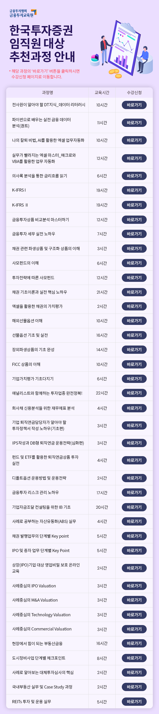

전사원이 알아야 할 DT지식_데이터 리터러시
파이썬으로 배우는 실전 금융 데이터 분석(퀀트)
나의 칼퇴 비법, AI를 활용한 엑셀 업무자동화
실무가 빨라지는 엑셀 마스터_매크로와 VBA를 활용한 업무 자동화
의사록 분석을 통한 금리흐름 읽기
K-IFRS I
K-IFRS II
금융투자상품 비교분석 마스터하기
금융투자 세무 실전 노하우
채권 관련 파생상품 및 구조화 상품의 이해
사모펀드의 이해
투자전략에 따른 사모펀드
채권 기초이론과 실전 핵심 노하우
엑셀을 활용한 채권의 가치평가
해외선물옵션 이해
선물옵션 기초 및 실전
장외파생상품의 기초 완성
FICC 상품의 이해
기업가치평가 기초다지기
애널리스트와 함께하는 투자업종 완전정복!
회사채 신용분석을 위한 재무제표 분석
기업 퇴직연금담당자가 알아야 할 투자정책서 작성 노하우(기초편)
IPS작성과 DB형 퇴직연금 운용전략(심화편)
펀드 및 ETF를 활용한 퇴직연금상품 투자 실전
디폴트옵션 운용방법 및 운용전략
금융투자 리스크 관리 노하우
기업자금조달 컨설팅을 위한 IB 기초
사례로 공부하는 자산유동화(ABS) 실무
채권 발행업무의 단계별 Key point
IPO 및 증자 업무 단계별 Key Point
상장(IPO)기업 대상 영업비밀 보호 온라인 교육
사례중심의 IPO Valuation
사례중심의 M&A Valuation
사례중심의 Technology Valuation
사례중심의 Commercial Valuation
현장에서 힘이 되는 부동산금융
도시정비사업 단계별 체크포인트
사례로 알아보는 대체투자심사의 핵심
국내부동산 실무 및 Case Study 과정
REITs 투자 및 운용 실무